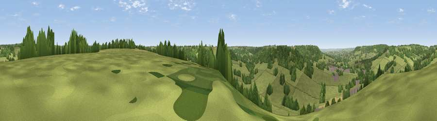

Viewpoint near Hemyock
#33951 in England · top 76% of its area beats it · near HemyockWhere it is
The exact computed spot (ST 15225 13225). Click the marker for map links.
The view, rendered

A 360° render of this exact spot computed from the terrain model, tree cover and land cover — summer colours, afternoon light, calibrated against photographs of famous viewpoints. Real trees, hedges and buildings will differ in detail.
The panorama
Grey silhouette: terrain skyline in each direction (720 bearings, Earth curvature and refraction included). Dashed green: skyline with trees (+15 m) and buildings (+8 m) as obstacles. Blue strip: how far the ground is visible on each bearing.
Where the view opens
Wedge length = distance to the farthest visible ground on that bearing (vegetation-aware). Rings at 10, 25 and 50 km.
What fills the view
74% grassland · 18% woodland · 6% cropland · 2% built-up
Angular shares of the visible panorama (visual magnitude), not map area. Landscape diversity 0.34 (0–1 Shannon).
Key numbers
More beautiful places nearby
The staircase of upgrades: each row has a higher view potential than everything closer. Driving times are estimates from straight-line distance, calibrated against real road routing — check an actual route before setting out.
| Place | Direction | Drive | Score |
|---|---|---|---|
| Viewpoint near Hemyock | NW · 2 km | ~5 min | 45.4 |
| Viewpoint near Culmstock | WSW · 4 km | ~10 min | 52.0 |
| Wellington Hill | NNW · 4 km | ~10 min | 74.9 |
| Viewpoint near Pitminster | NE · 6 km | ~13 min | 77.3 |
| Viewpoint near Broomfield | N · 19 km | ~33 min | 78.5 |
| Cothelstone Hill | N · 20 km | ~34 min | 82.1 |
| Viewpoint near West Bagborough | N · 21 km | ~36 min | 84.3 |
| Wills Neck | N · 22 km | ~37 min | 85.7 |
50.91224, -3.20722 · source: screening · position refined by local search. Computed location — check access rights before visiting.